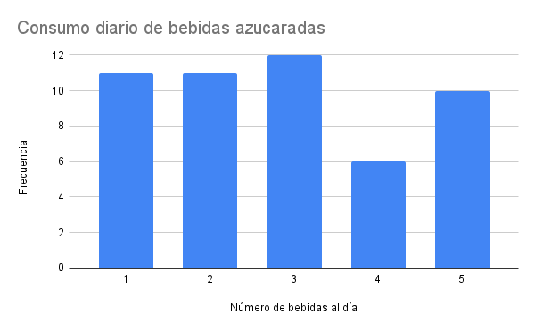
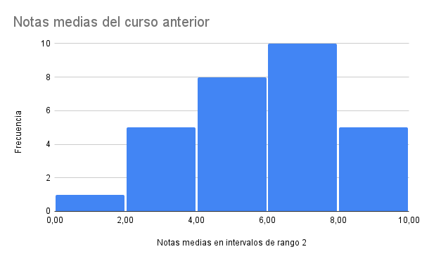
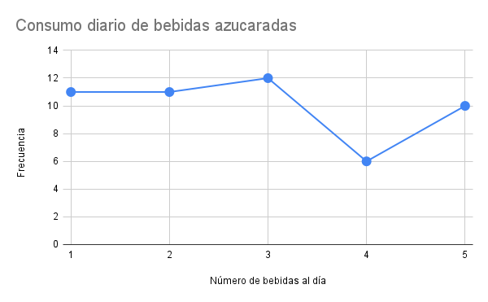
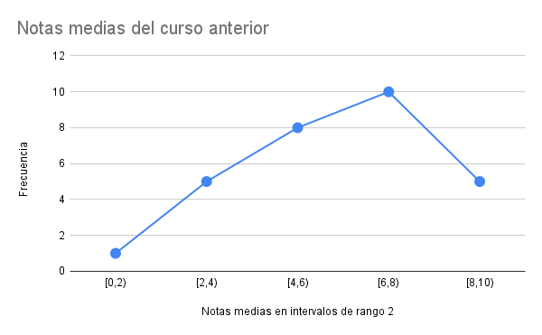
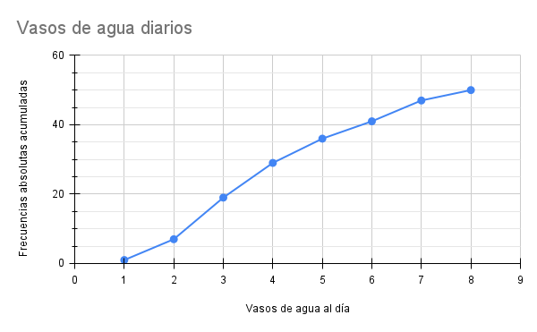
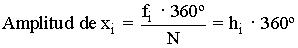
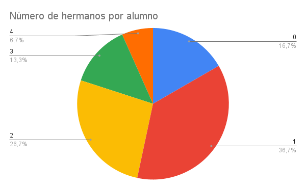

Gráficos estadísticos
La información contenida en las tablas estadísticas se interpreta con más facilidad si la representamos en gráficos estadísticos.
El gráfico elegido dependerá del tipo de variable que representemos, dependerá:
- Cualitativa: diagrama de barras o diagrama de sectores.
- Cuantitativa discreta: diagrama de barras, polígono de frecuencias o diagrama de sectores.
- Cuantitativa continua: histograma o polígono de frecuencias.
Diagrama de barras
Los diagramas de barras se pueden utilizar con variables estadísticas cualitativas y cuantitativas discretas.
*Ejemplo: Realizamos un estudio para conocer el número de bebidas azucaradas que consumen al día 50 adolescentes y obtenemos los siguientes datos.
| xi | fi |
| 1 | 11 |
| 2 | 11 |
| 3 | 12 |
| 4 | 6 |
| 5 | 10 |
Representamos xi en el eje horizontal o de abscisas y fi en el eje vertical o de ordenadas.

Para nuestro proyecto vamos a representar los gráficos con la hoja de cálculo de Google, ya que no solo es más rápido sino que los resultados son mejores de cara a una presentación.
*Representación del diagrama de barras con hoja de cálculo de Google.
Histograma
El histograma sólo se pueden utilizar con variables cuantitativas continuas o discretas si sus datos han sido agrupados en intervalos.
*Ejemplo: Estamos elaborando un estudio sobre las notas medias del curso anterior de una clase de 3º de E.S.O. de 29 alumnos y los datos que obtenemos son los siguientes.
| 2,8 | 3,2 | 1,5 | 4,5 | 7,2 | 8,5 | 9 | 5,5 | 6,3 | 7,4 |
| 8 | 6 | 6,2 | 5 | 5,1 | 3,3 | 4 | 4,3 | 6,7 | 5,9 |
| 6,2 | 8,8 | 3,4 | 2 | 9,5 | 7 | 6 | 4,4 | 6 |
| Intervalos | Marca de clase (ci) | Frecuencia absoluta (fi) |
| [0,2) | 1 | 1 |
| [2,4) | 3 | 5 |
| [4,6) | 5 | 8 |
| [6,8) | 7 | 10 |
| [8,10) | 9 | 5 |
Representamos los intervalos o la marca de clase en el eje horizontal y la frecuencia en el eje vertical.

*Representación del histograma con hoja de cálculo de Google.
Polígono de frecuencias
Los polígonos de frecuencia se utilizan con variables discretas y continuas. Para hallarlos solo tenemos que unir los puntos medios de nuestras barras.
*Ejemplo: Usemos los gráficos que hemos confeccionados en los apartados anteriores.
Polígono de frecuencias en diagrama de barras

Polígono de frecuencias en histograma

Polígono de frecuencias acumuladas
Gráfico similar al polígono de frecuencias, con la diferencia que recoge los datos correspondientes a las frecuencias absolutas acumuladas. También los podemos usar para variables discretas y continuas.
*Ejemplo: Realizamos un estudio para conocer el número de vasos de agua que consumen al día 50 adolescentes y obtenemos los siguientes datos.
| xi | fi | Fi |
| 1 | 1 | 1 |
| 2 | 6 | 7 |
| 3 | 12 | 19 |
| 4 | 10 | 29 |
| 5 | 7 | 36 |
| 6 | 5 | 41 |
| 7 | 6 | 47 |
| 8 | 3 | 50 |

*Representación del polígono de frecuencias con hoja de cálculo de Google.
Diagrama de sectores
Los diagramas de sectores se utilizan con variables cualitativas y cuantitativas discretas.
La amplitud angular correspondiente a cada cualidad o valor de la variable se calcula mediante la expresión:

*Ejemplo:
En una clase de 30 alumnos se pregunta por el número de hermanos que tiene cada alumno, los resultados son:
Ten en cuenta calcular la frecuencia relativa (hi) para simplificar los cálculos.
Calcula también los porcentajes para ponerlos en el gráfico.
| Nº de hermanos (xi) | Frecuencia absoluta (fi) | Frecuencia relativa (hi) | Porcentaje (pi) |
| 0 | 5 | 0,1666 | 16,66% |
| 1 | 11 | 0,3666 | 36,66 |
| 2 | 8 | 0,2666 | 26,66 |
| 3 | 4 | 0,1333 | 13,33 |
| 4 | 2 | 0,0666 | 6,66 |
| Total | N=30 | 1 |
Calculamos:
h1 x 360 = 59,9º= 60º
h2 x 360 = 131,9º= 132º
h3 x 360 = 95,9º= 96º
h4 x 360 = 47,9º= 48º
h5 x 360 = 23,9º= 24º

*Representación del diagrama de sectores con hoja de cálculo de Google.